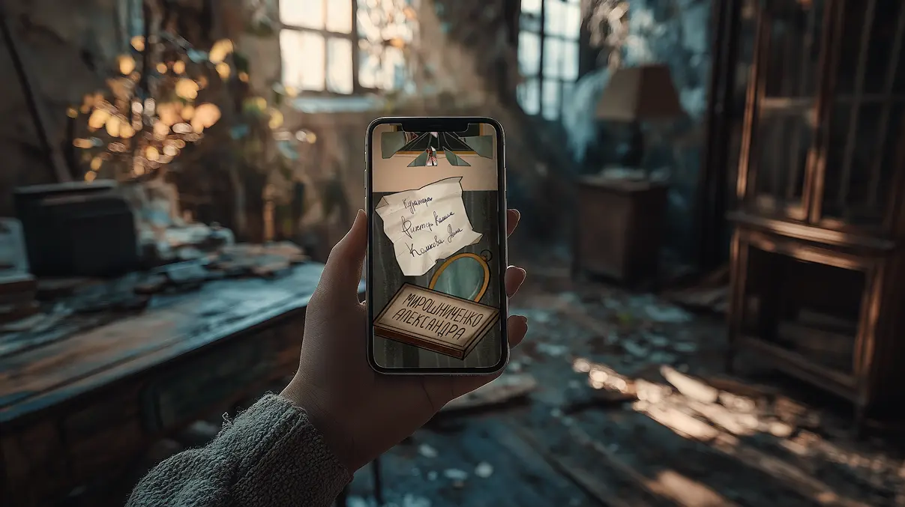

о чем игра?
Интерактивный плакат «Дом зеркал» представляет собой визуальный рассказ о девочке, которая, ведомая любопытством, оказывается в заброшенном доме, где зеркала скрывают не просто отражения, а альтернативные версии её самой. Плакат состоит из четырёх блоков, каждый из которых раскрывает часть этой истории.
Важно, чтобы дети играли в такие интерактивные игры, так как они помогают им понять, что не всё, что кажется знакомым, безопасно. Через визуальный и интерактивный опыт дети учатся быть осторожными с незнакомыми ситуациями и понимать, что за внешним сходством могут скрываться опасности.
Таким образом, игра способствует развитию критического мышления и осторожности у детей, что особенно важно в современном мире, полном информации и образов, которые могут быть обманчивыми
Это интерактивная история о том, как не потеряться среди отражений. ребёнок вместе с героиней проходит через серии зеркал, учится распознавать альтернатив и выбирать безопасный путь. плакат можно открыть прямо на телефоне или планшете — он адаптирован для экранов и удобно читается с любого устройства. подходит для самостоятельного просмотра или в сопровождении взрослого.